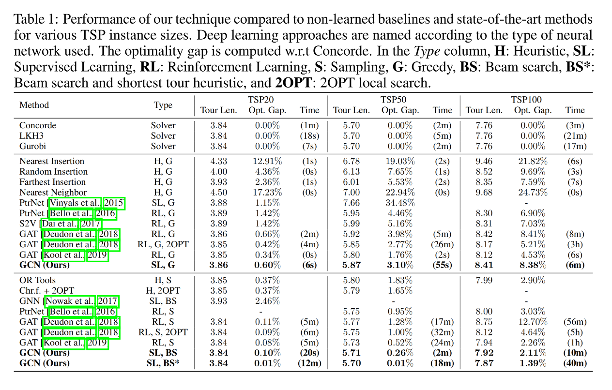

Paper Reading #1: GCN4TSP
Last updated on September 5, 2025 pm
本文将精读论文 “An efficient graph convolutional network technique for the travelling salesman problem”，作者 Joshi et al.，时间 2019 年，链接 arXiv:1906.01227。
论文概述
这是一篇比较早的监督学习方向的工作，把图卷积网络（GCN）应用到解 TSP 问题的模型中。事实上，这已经成为 ML4CO 中的一类经典方法，我们之前在 Paradigm 1: Supervised GNN + Decoding 中就学过其基本思想。但本文比我们的简单模型有很多改进之处，效果当然也更好。
我们先阅读一下文章摘要：
This paper introduces a new learning-based approach for approximately solving the Travelling Salesman Problem on 2D Euclidean graphs. We use deep Graph Convolutional Networks to build efficient TSP graph representations and output tours in a non-autoregressive manner via highly parallelized beam search. Our approach outperforms all recently proposed autoregressive deep learning techniques in terms of solution quality, inference speed and sample efficiency for problem instances of fixed graph sizes. In particular, we reduce the average optimality gap from 0.52% to 0.01% for 50 nodes, and from 2.26% to 1.39% for 100 nodes. Finally, despite improving upon other learning-based approaches for TSP, our approach falls short of standard Operations Research solvers.
文章主要面向 TSP 问题，规模在 100 以内。采用 non-autoregressive 方法，解码时使用了束搜索（beam search），比同时期的 autoregressive 方法效果好。基本方法我们在之前讲过，大致是：
- 模型构建：GCN 输入一张图，提取顶点和边的特征，并输出一张热力图（heatmap），每个元素
P(i, j)代表边(i, j)属于最优解的概率。 - 训练过程：GCN 读入问题实例，输出热力图，与真实标签比较，计算损失并更新。
- 解码过程：以热力图为指导构建最终解，采用束搜索。
- Solution quality: We efficiently train deep graph ConvNets with better representation capacity compared to previous approaches, leading to significant gains in solution quality (in terms of closeness to optimality).
- Inference speed: Our graph ConvNet and beam search implementations are highly parallelized for GPU computation, leading to fast inference time and better scalability to large graphs. In contrast, autoregressive approaches scale poorly to large graphs due to the sequential nature of the decoding process, which cannot be parallelized.
- Sample efficiency: Our supervised training setup using pairs of problem instances and optimal solutions is more sample efficient compared to reinforcement learning. We are able to learn better approximate solvers using lesser training data.
作者认为，监督学习相对于强化学习的优势是：并行性好，推理速度快，规模扩展性好，需要的训练数据更少。
模型
由于我们之前已经在 Paradigm 1: Supervised GNN + Decoding 中介绍过类似的模型，这里只介绍这篇文章与我们自己搭建的模型的不同之处。
Embedding 层 – 加入 KNN 特征
顶点嵌入方法和我们之前所做一致，即将顶点坐标 做线性变换：
其中 。
但边的 embedding 方法比较巧妙。在对距离 做线性变换的同时，还加入了k-近邻的表征。定义表征函数
从而边的嵌入方式为：
其中 ，， 表示向量拼接。
加入了“k-近邻”这一表征，作者认为可以加速学习过程，因为 TSP 的解中大多数顶点都和较近的顶点相连。
GCN 层 – 加入注意力映射
在本篇论文中，GCN 层的更新方法为：
其中 ， 是 Batch Normalization， 是 Sigmoid 函数， 是一个很小的值。
这里的创新点在于引入了 ，这使得相邻顶点的传播取决于他们之间边的特征。这时候，边的特征像一个开关，可以控制相邻顶点之间的信息交换。作者指出，这种注意力映射的加入，使得信息的传播具有各向异性。
输出层采用 MLP，与我们之前的实现一致，在此不再赘述。
损失函数 – 权重调整
损失计算仍采用 heatmap 之间的交叉熵损失，但对正、负样本进行了权重的调整。这是由于在图的规模增大时，正类别样本很少（即在 TSP 最优路径中的边），负类别样本很多。如果不对损失做加权，模型会“偷懒”，即无脑地把所有边都预测为不在路径中，以获得相当高的准确率，但这样的模型完全没有用，找不到正确的路径。
因此，我们需要给不同类别的样本分配不同的权重——给正类别样本上的错误以较大的惩罚，让模型有动力去学习那少数但至关重要的正类别样本，因为它在这些样本上犯错的代价非常高。
在文章中，给正、负样本赋予的权重分别为：
其中 是顶点个数， 是类别数。
这个公式给出的 将会远大于 ，从而给正样本的损失更大的惩罚。
解码过程 – 束搜素
在 decoding 过程中，文章使用了 Greedy search、Beam search 以及 Beam search and Shortest tour heuristic 三种不同的方法。其中 Greedy search 我们之前已经讲过。
束搜索是一种宽度受限的 BFS。它在每一步保留 个当前最优的（即概率最高的）部分路径，并从这 个路径出发进行下一步的探索，其中部分路径 的概率的计算方式为：
其中 表示边 出现在最终路径中的概率。
束搜索的具体过程是：从一个起点开始，找到概率最高的 条边进行连接，形成 个长度为 1 的初始路径。在接下来的每一步，我们对这 个路径分别进行扩展，从所有可能的新路径中，再次选出总概率最高的 个保留下来，并抛弃其余所有选择。这个过程不断重复，直到所有节点都被访问，最终我们会得到 个完整的候选路径。我们从中选择概率最高的那一条作为最终的解。
而加入了 Shortest tour heuristic 的束搜索，就是在最后 条完整的候选路径中，不选择概率最高的一条，而是选择长度最短的一条，作为得到的最终解。
实验结果
在 TSP-20、TSP-50 和 TSP-100（均为 uniform）上实验，结果如下图。

- Greedy 设置下，解的质量和速度均不如 GAT（即 AM，参考 Paper Reading #2: AM）。
- Search/Sampling 设置下，配合束搜索，解的质量和速度均超过 GAT。
- 结合 Shortest tour heuristic 后，解的质量提高，但速度下降。
- 样本效率（Sample Efficiency）方面，监督学习优于强化学习，即达到很低的 Optimality Gap 所需的训练样本数量远少于 RL 方法。
- 原因是，监督学习直接为模型提供了关于最优解的完整信息，这是一个非常强的指导信号。相比之下，强化学习依赖于稀疏的奖励信号（最终路径的总长度），学习起来更困难，需要更多的探索和样本。
- 泛化能力方面，模型的泛化能力较差，即当把一个在特定尺寸（如 TSP50）上训练好的模型，用鱼解决另一个尺寸（如 TSP100）的问题时，其性能会急剧下降。